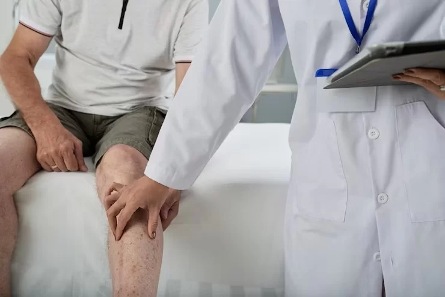

Knee Arthroscopy: Procedure, Preparation and Recovery
Knee Arthroscopy Procedure
Using a surgical technique called knee arthroscopy, a major incision (cut) through the skin is avoided to allow the doctor to observe the knee joint. A tiny camera is used during knee arthroscopy surgery to view your knee. Small cuts are created to implant the camera and other small surgical tools into your knee during the treatment. This surgery, called a knee arthroscopy, uses a tiny camera to look inside your knee for any issues.
It is hoped that by being less invasive, there will be less discomfort and a quicker recovery. Arthroscopy is a minor surgical treatment that still entails dangers and needs proper postoperative rehabilitation. The most typical places for pain after surgery are soft tissues below the knee cap, the area around the arthroscopy wounds, and occasionally the entire knee.
Why is Arthroscopy recommended by a doctor?
Your doctor may suggest an arthroscopic procedure to diagnose a condition. Your doctor can thoroughly inspect each component of a joint during Arthroscopy. The doctor can check your joint's soft tissues for problems like inflammation, torn cartilage, or other soft tissue problems. Arthroscopy is frequently used to identify and treat conditions that harm the ligaments, articular cartilage, and other structures surrounding the joint.
Several knee conditions, such as torn meniscus or a displaced patella (kneecap), can be diagnosed through Arthroscopy. The ligaments of the joint can also be repaired by it. The surgery carries only little risk, and most patients have a positive prognosis. Your prognosis and recovery period will depend on how bad your knee condition is and how difficult the surgery will be.
If you have knee pain, your doctor may advise that you have a knee arthroscopy. Your doctor may have previously identified the illness causing your discomfort, or they may have requested an arthroscopy to aid in the diagnosis. In either scenario, an arthroscopy is a helpful tool for medical professionals to identify the cause of knee discomfort and offer a remedy.
If you experience any discomfort in your knee or pain of any kind, you must reach out to doctor as soon as possible. Delaying diagnosis will only delay treatment, worsening the patient's situation.
How do I prepare for Knee Arthroscopy?
You will receive preparation instructions from your doctor or surgeon. Tell them immediately about any prescription drugs, over-the-counter remedies, or dietary supplements you use. Before surgery, you should stop taking some medications, like aspirin or ibuprofen, for a few days or weeks. Additionally, you must go without food or liquids for six to twelve hours before the procedure. In some circumstances, your doctor could advise taking a painkiller to ease any discomfort you feel following the operation.
The more time you have to prepare, the higher your chances of successful knee surgery and a smooth recovery. This is the ideal time to ensure that your body is in the greatest condition possible for surgery and to set up your house for your recovery. To have this prescription ready after the treatment, you should fill it out in advance. The doctor might check you up for:
- Analysing the urine and performing blood tests to detect any potential issues.
- Adapt some drugs, such as blood thinners.
- Control any health conditions, such as diabetes or high blood pressure.
You may do many things to help with your recovery following knee surgery. These can help your return to your regular, daily activities go much more smoothly while you heal.
Get medical clearance:
If your surgeon has instructed you to do so, make an appointment with your primary care doctor for a preoperative history and physical examination.
Consult your physician:
Discuss strategies to lessen risk factors for problems, such as smoking, excessive coffee consumption, and herbal supplements.
What are the risks associated with Knee Arthroscopy?
These are a few risks that are associated with Knee Arthroscopy that you must learn about—
Infection
From 0.009 to 0.4 per cent, the risk of infection following arthroscopic knee surgery is quite low. Deep joint infection is a more severe surgical consequence. Even less frequently than surface infections, this kind of infection occurs.
Clotting of blood
Patients with blood problems or genetic abnormalities predisposing them to clot have a higher chance of forming blood clots after knee arthroscopy. The risk is minimal for those who do not have any blood abnormalities.
Allergy
Allergic reactions to anesthesia can be observed in many patients. However, this might settle down in a short while. You must contact the doctor immediately if any allergic severe signs are visible.
How much time will it take to recover from Knee Arthroscopy surgery?
Depending on each person's circumstances, recovery times differ. Healing times are affected by various factors, including age, injuries, health status, and capacity and commitment to complete physical treatment. It's crucial to recognise that getting healthier could take several months. In minimally invasive surgery, arthroscopic knee repair uses local or spinal anesthesia, small incisions, less bleeding, quicker healing, and less harm to soft tissue.
Approximately six weeks will be needed for you to recover. It will take more time to recuperate if your doctor restores the injured tissue. Before your knee strength and mobility return, you should cut back on your activity. You can gradually resume your prior activities if you have a complete range of motion, full strength, and no swelling six weeks after surgery. After surgery, physical therapy begins immediately.
After surgery, the patient should be able to stand or walk while supporting weight on the knee while wearing a brace.
Like any surgical operation, recovering from knee surgery takes time and happens in stages. Recovery following arthroscopic knee surgery may go more quickly depending on the patient's overall lifestyle, exercise regimen, physical health, among other things. Ultimately, recovery time for people who have undergone this procedure differs by person, making it difficult to anticipate how long it will take a certain person to recover from surgery fully.